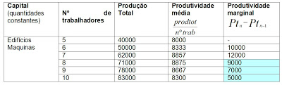

Uma empresa também pode focar em maximizar os lucros ao invés de diminuir os custos, se bem que ambos fatores estão em muitos casos, diretamente relacionados. A lei basicamente pode ser explicada da seguinte forma: aumentando-se a quantidade de um fato, permanecendo fixa a quantidade dos demais fatores, a produção crescerá, só que após certa quantidade utilizada do fator variável, passará a crescer a taxas decrescentes. Continuando o aumento do fator anterior, a produção será prejudicada por perder eficiência. Um exemplo, é o aumento do número de trabalhadores em uma certa extensão de terra. Numa primeira fase a produção aumenta, mas logo se chega a um estado de nenhum aumento na produção, devido ao excesso de trabalhadores em relação à extensão de terra que não aumentou".
Na verdade, essa lei busca obter uma relação entre o benefício de se adicionar unidades produtoras de trabalho versus a eficiência da produção. Isto é, até que ponto é vantajoso de se obter mais forças de trabalho produtivas para que se obtenha o máximo da produção sem comprometer a mesma. No caso da tabela acima por exemplo, é possível observar que à partir de 8 trabalhadores, a produtividade marginal é prejudicada e isso passa a não ser vantajoso para a empresa.